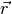
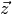
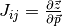
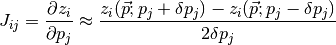
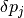
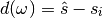
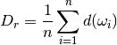
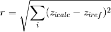

Sensitivity Analysis¶
Test here: (local) sensitivity analysis of kinematic parameters with respect to a defined objective function. Aim: test how sensitivity the resulting model is to uncertainties in kinematic parameters to:
- Evaluate which the most important parameters are, and to
- Determine which parameters could, in principle, be inverted with suitable information.
Theory: local sensitivity analysis¶
Basic considerations:
- parameter vector

- residual vector 
- calculated values at observation points 
- Jacobian matrix 
Numerical estimation of Jacobian matrix with central difference scheme (see Finsterle):

where  is a small perturbation of parameter  ,
often as a fraction of the value.
,
often as a fraction of the value.
Defining the responses¶
A meaningful sensitivity analysis obviously depends on the definition of a suitable response vector . Ideally, these responses are related to actual observations. In our case, we first want to determine how sensitive a kinematic structural geological model is with respect to uncertainties in the kinematic parameters. We therefore need calculatable measures that describe variations of the model.
As a first-order assumption, we will use a notation of a stratigraphic
distance for discrete subsections of the model, for example in single
voxets for the calculated model. We define distance  of a
subset
of a
subset  as the (discrete) difference between the
(discrete) stratigraphic value of an ideal model, , to
the value of a model realisation
as the (discrete) difference between the
(discrete) stratigraphic value of an ideal model, , to
the value of a model realisation  :
:

In the first example, we will consider only one response: the overall
sum of stratigraphic distances for a model realisation  of all
subsets (= voxets, in the practical sense), scaled by the number of
subsets (for a subsequent comparison of model discretisations):
of all
subsets (= voxets, in the practical sense), scaled by the number of
subsets (for a subsequent comparison of model discretisations):

Note: mistake before: not considering distances at single nodes but only the sum - this lead to “zero-difference” for simple translation! Now: consider more realistic objective function, squared distance:

from IPython.core.display import HTML
css_file = 'pynoddy.css'
HTML(open(css_file, "r").read())
%matplotlib inline
Setting up the base model¶
For a first test: use simple two-fault model from paper
import sys, os
import matplotlib.pyplot as plt
import numpy as np
# adjust some settings for matplotlib
from matplotlib import rcParams
# print rcParams
rcParams['font.size'] = 15
# determine path of repository to set paths corretly below
repo_path = os.path.realpath('../..')
import pynoddy.history
import pynoddy.events
import pynoddy.output
reload(pynoddy.history)
reload(pynoddy.events)
nm = pynoddy.history.NoddyHistory()
# add stratigraphy
strati_options = {'num_layers' : 8,
'layer_names' : ['layer 1', 'layer 2', 'layer 3', 'layer 4', 'layer 5', 'layer 6', 'layer 7', 'layer 8'],
'layer_thickness' : [1500, 500, 500, 500, 500, 500, 500, 500]}
nm.add_event('stratigraphy', strati_options )
# The following options define the fault geometry:
fault_options = {'name' : 'Fault_W',
'pos' : (4000, 3500, 5000),
'dip_dir' : 90,
'dip' : 60,
'slip' : 1000}
nm.add_event('fault', fault_options)
# The following options define the fault geometry:
fault_options = {'name' : 'Fault_E',
'pos' : (6000, 3500, 5000),
'dip_dir' : 270,
'dip' : 60,
'slip' : 1000}
nm.add_event('fault', fault_options)
history = "two_faults_sensi.his"
nm.write_history(history)
output_name = "two_faults_sensi_out"
# Compute the model
pynoddy.compute_model(history, output_name)
''
# Plot output
nout = pynoddy.output.NoddyOutput(output_name)
nout.plot_section('y', layer_labels = strati_options['layer_names'][::-1],
colorbar = True, title="",
savefig = False)

png
Define parameter uncertainties¶
We will start with a sensitivity analysis for the parameters of the fault events.
H1 = pynoddy.history.NoddyHistory(history)
# get the original dip of the fault
dip_ori = H1.events[3].properties['Dip']
# dip_ori1 = H1.events[2].properties['Dip']
# add 10 degrees to dip
add_dip = -20
dip_new = dip_ori + add_dip
# dip_new1 = dip_ori1 + add_dip
# and assign back to properties dictionary:
H1.events[3].properties['Dip'] = dip_new
reload(pynoddy.output)
new_history = "sensi_test_dip_changed.his"
new_output = "sensi_test_dip_changed_out"
H1.write_history(new_history)
pynoddy.compute_model(new_history, new_output)
# load output from both models
NO1 = pynoddy.output.NoddyOutput(output_name)
NO2 = pynoddy.output.NoddyOutput(new_output)
# create basic figure layout
fig = plt.figure(figsize = (15,5))
ax1 = fig.add_subplot(121)
ax2 = fig.add_subplot(122)
NO1.plot_section('y', position=0, ax = ax1, colorbar=False, title="Dip = %.0f" % dip_ori)
NO2.plot_section('y', position=0, ax = ax2, colorbar=False, title="Dip = %.0f" % dip_new)
plt.show()

png
Calculate total stratigraphic distance¶
# def determine_strati_diff(NO1, NO2):
# """calculate total stratigraphic distance between two models"""
# return np.sum(NO1.block - NO2.block) / float(len(NO1.block))
def determine_strati_diff(NO1, NO2):
"""calculate total stratigraphic distance between two models"""
return np.sqrt(np.sum((NO1.block - NO2.block)**2)) / float(len(NO1.block))
diff = determine_strati_diff(NO1, NO2)
print(diff)
5.56205897128
Function to modify parameters¶
Multiple event parameters can be changed directly with the function
change_event_params, which takes a dictionarly of events and
parameters with according changes relative to the defined parameters.
Here a brief example:
# set parameter changes in dictionary
changes_fault_1 = {'Dip' : -20}
changes_fault_2 = {'Dip' : -20}
param_changes = {2 : changes_fault_1,
3 : changes_fault_2}
reload(pynoddy.history)
H2 = pynoddy.history.NoddyHistory(history)
H2.change_event_params(param_changes)
new_history = "param_dict_changes.his"
new_output = "param_dict_changes_out"
H2.write_history(new_history)
pynoddy.compute_model(new_history, new_output)
# load output from both models
NO1 = pynoddy.output.NoddyOutput(output_name)
NO2 = pynoddy.output.NoddyOutput(new_output)
# create basic figure layout
fig = plt.figure(figsize = (15,5))
ax1 = fig.add_subplot(121)
ax2 = fig.add_subplot(122)
NO1.plot_section('y', position=0, ax = ax1, colorbar=False, title="Original Model")
NO2.plot_section('y', position=0, ax = ax2, colorbar=False, title="Changed Model")
plt.show()

png
Full sensitivity analysis¶
Perform now a full sensitivity analysis for all defined parameters and analyse the output matrix. For a better overview, we first create a function to perform the sensitivity analysis:
import copy
new_history = "sensi_tmp.his"
new_output = "sensi_out"
def noddy_sensitivity(history_filename, param_change_vals):
"""Perform noddy sensitivity analysis for a model"""
param_list = [] # list to store parameters for later analysis
distances = [] # list to store calcualted distances
# Step 1:
# create new parameter list to change model
for event_id, event_dict in param_change_vals.items(): # iterate over events
for key, val in event_dict.items(): # iterate over all properties separately
changes_list = dict()
changes_list[event_id] = dict()
param_list.append("event_%d_property_%s" % (event_id, key))
for i in range(2):
# calculate positive and negative values
his = pynoddy.history.NoddyHistory(history_filename)
if i == 0:
changes_list[event_id][key] = val
# set changes
his.change_event_params(changes_list)
# save and calculate model
his.write_history(new_history)
pynoddy.compute_model(new_history, new_output)
# open output and calculate distance
NO_tmp = pynoddy.output.NoddyOutput(new_output)
dist_pos = determine_strati_diff(NO1, NO_tmp)
NO_tmp.plot_section('y', position = 0, colorbar = False,
title = "Dist: %.2f" % dist_pos,
savefig = True,
fig_filename = "event_%d_property_%s_val_%d.png" \
% (event_id, key,val))
if i == 1:
changes_list[event_id][key] = -val
his.change_event_params(changes_list)
# save and calculate model
his.write_history(new_history)
pynoddy.compute_model(new_history, new_output)
# open output and calculate distance
NO_tmp = pynoddy.output.NoddyOutput(new_output)
dist_neg = determine_strati_diff(NO1, NO_tmp)
NO_tmp.plot_section('y', position=0, colorbar=False,
title="Dist: %.2f" % dist_neg,
savefig=True,
fig_filename="event_%d_property_%s_val_%d.png" \
% (event_id, key,val))
# calculate central difference
central_diff = (dist_pos + dist_neg) / (2.)
distances.append(central_diff)
return param_list, distances
As a next step, we define the parameter ranges for the local sensitivity analysis (i.e. the from the theoretical description above):
changes_fault_1 = {'Dip' : 1.5,
'Dip Direction' : 10,
'Slip': 100.0,
'X': 500.0}
changes_fault_2 = {'Dip' : 1.5,
'Dip Direction' : 10,
'Slip': 100.0,
'X': 500.0}
param_changes = {2 : changes_fault_1,
3 : changes_fault_2}
And now, we perform the local sensitivity analysis:
param_list_1, distances = noddy_sensitivity(history, param_changes)
The function passes back a list of the changed parameters and the calculated distances according to this change. Let’s have a look at the results:
for p,d in zip(param_list_1, distances):
print "%s \t\t %f" % (p, d)
event_2_property_X 2.716228
event_2_property_Dip 1.410039
event_2_property_Dip Direction 2.133553
event_2_property_Slip 1.824993
event_3_property_X 3.323528
event_3_property_Dip 1.644589
event_3_property_Dip Direction 2.606573
event_3_property_Slip 1.930455
Results of this local sensitivity analysis suggest that the model is most sensitive to the X-position of the fault, when we evaluate distances as simple stratigraphic id differences. Here just a bar plot for better visualisation (feel free to add proper labels):
d = np.array([distances])
fig = plt.figure(figsize=(5,3))
ax = fig.add_subplot(111)
ax.bar(np.arange(0.6,len(distances),1.), np.array(distances[:]))
<Container object of 8 artists>

png
The previous experiment showed how pynoddy can be used for simple
scientific experiments. The sensitivity analysis itself is purely local.
A better way would be to use (more) global sensitivity analysis, for
example using the Morris or Sobol methods. These methods are implemented
in the Python package SALib, and an experimental implementation of
this method into pynoddy exists, as well (see further notebooks on
repository, note: no guaranteed working, so far!).